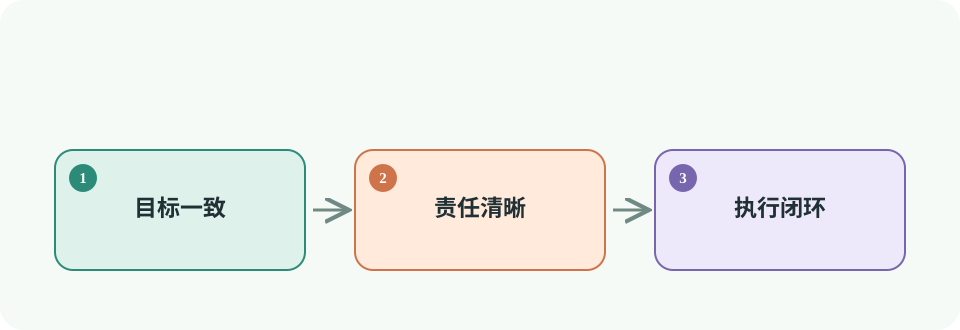
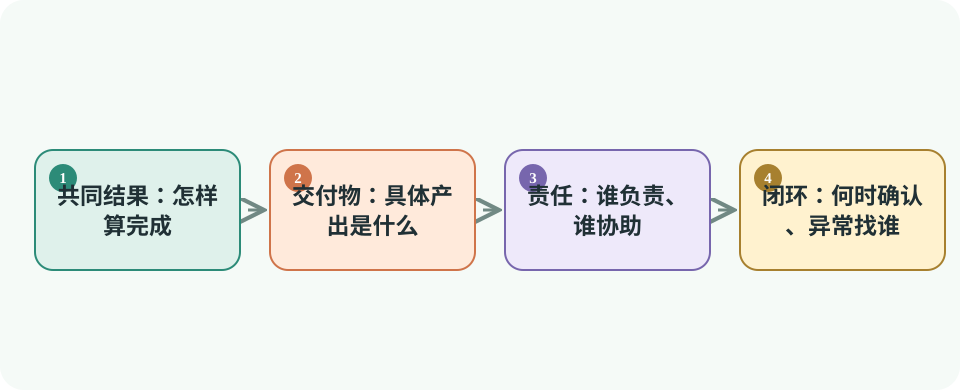

同事协作：把口头配合变成执行闭环
共同目标、清晰责任与复述确认，减少“我以为你会做”的落差
01 · 从一个具体问题开始
跨团队协作最容易卡在模糊词语：已经对齐、尽快处理、我来跟进、你看着办。每个人都觉得自己听懂了，但对交付物、负责人和截止时间的理解并不相同。
先确认共同结果，再把工作拆成可交付的责任单元，最后复述双方认可的安排并设置更新与升级机制。
02 · 把方法拆成可观察的动作
向上汇报、同事协作与管理反馈：把目标、责任、风险和决策说清楚。 这些动作是教学工具，不是必须逐字套用的公式。

目标一致
先复述共同成功标准，不说“你就应该帮我”。
责任清晰
明确交付物、负责人、依赖、截止时间和资源约束。
执行闭环
复述双方确认的安排，约定异步更新频率与风险升级机制。
03 · 多轮案例：回应怎样随着信息推进
字段命名案例展示一个常见误区：名字相似不等于语义相同。
统一字段命名
两人共同整理客户表单，但两份表格对同一字段使用了不同名称。
沟通目标：共同确认字段词典并更新共享文档。
你说的“客户号”是哪一列？
我们在说同一个客户标识，但两份表用的名字不同。先把两份样例对照确认，避免凭名字猜。
我这里叫用户ID。
你那边叫用户ID，我这边叫客户号。先核实它们是否真指同一个字段、取值规则是否一致；确认前不直接改代码或改表。
怎么确保下次不混？
今天共同更新共享字段词典：标准字段名、含义、来源表、示例值和负责人各写清楚。
示范回应用于观察结构，不是唯一正确答案。真实沟通应根据事实、关系和风险调整。

04 · 交互拆解：逐步检查每个动作
选择一个动作，观察它解决的具体问题。所有步骤默认都在页面中可读；按钮只是帮助你聚焦其中一层。
怎样把沟通原则变成下一句话
目标一致
先复述共同成功标准，不说“你就应该帮我”。
检查点：这一轮是否回应了对方刚刚提出的具体问题？
责任清晰
明确交付物、负责人、依赖、截止时间和资源约束。
检查点：这一轮是否回应了对方刚刚提出的具体问题？
执行闭环
复述双方确认的安排，约定异步更新频率与风险升级机制。
检查点：这一轮是否回应了对方刚刚提出的具体问题？
当前聚焦第 1 步。
05 · 常见失误与适用边界
- 把“协助”当成无限期接手，未谈资源与优先级。
- 只按字段名称推断含义，没有核实真实数据定义。
- 会议结束没有复述负责人、时间和交付标准。
任何沟通框架都不能替代事实核查、正式流程、法律意见或现实安全判断。遇到不确定信息，应明确说出未知并约定核验方式。
06 · 把文章变成一次练习
选一项最近的协作任务，把“谁做什么、何时交付、依赖什么、如何确认”写成四行，再练习口头复述。
统一字段命名
在训练页打开这道案例，先隐藏参考、逐轮作答，再做四维自评。
07 · 来源与说明
本文区分外部框架、项目教学改编和案例示范。引用只支持来源中明确涉及的概念，不代表本文所有表达步骤均经过实验验证。
- AHRQ TeamSTEPPS · Check-Back · https://www.ahrq.gov/hai/cusp/modules/implement/teamwork.html（Teamwork tools and closed-loop communication）
本文的案例、步骤顺序、互动拆解和四维自评属于言习课程设计。项目自评用于个人纵向复盘，不是经心理测量验证的量表，也不是任何机构的认证课程。